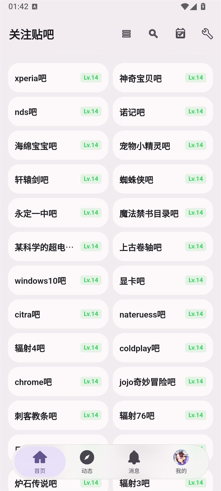
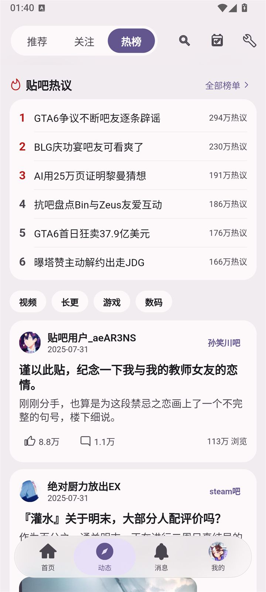
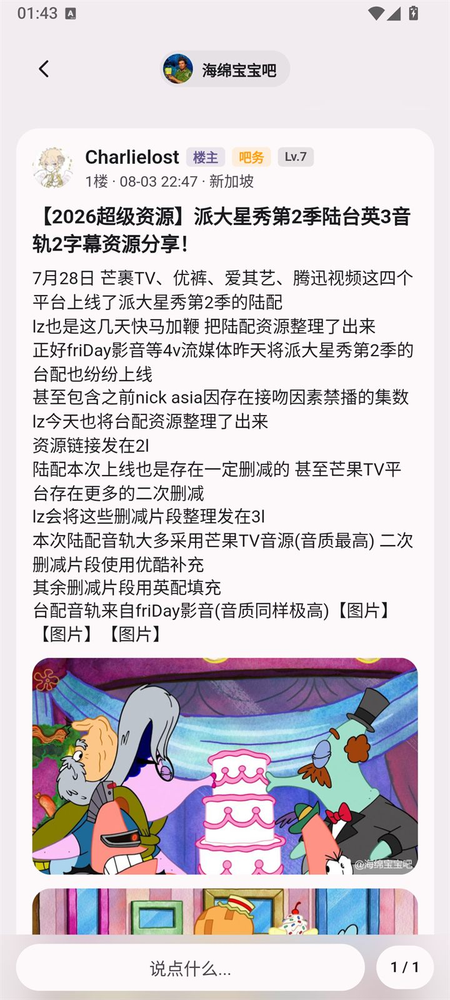
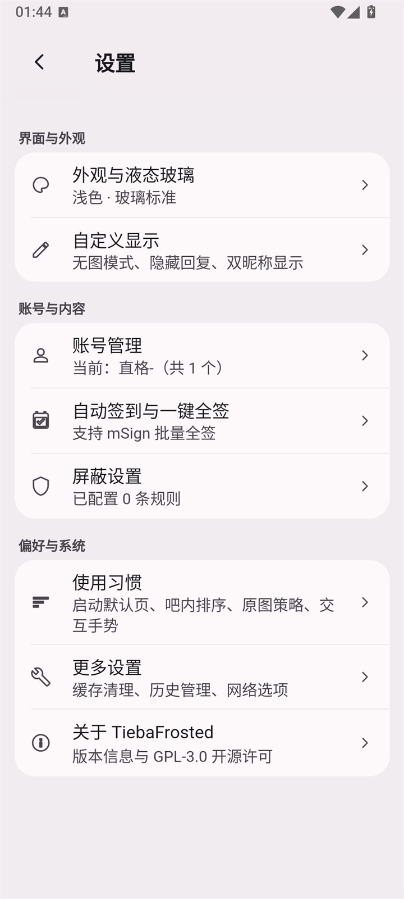

关注贴吧
网格与单列两种排列可切换，长按置顶。顺序跟随服务端按等级排序的结果。
浏览、交互、账号与外观，覆盖日常使用的主要路径。
网格与单列两种排列可切换，长按置顶。顺序跟随服务端按等级排序的结果。
推荐 / 关注 / 热榜，顶栏胶囊切换。双击底栏「动态」刷新当前流并回到顶部。
主楼 + 楼层 + 楼中楼，正序 / 倒序 / 热门。倒序从最后一页进入，直接看最新回复。
点一下直接全签，进度与结果落在通知栏。设置里保留逐吧日志与定时签到。
底栏与顶栏的玻璃质感，三档可调（关 / 标准 / 极致）。滚动时顶栏底栏自动隐藏。
深浅色 / 跟随系统，四档配色风格，Android 12+ Monet 壁纸取色，自适应图标。
网页登录 / 粘贴 Cookie / 游客模式。长按底栏「我的」快速切号。
关键词、正则表达式、用户、吧，支持白名单优先级与屏蔽历史。
Android 14 · 1080×2400 · 真实接口数据。




下载 APK 直接安装，或通过 adb 推送。
TiebaFrosted-1.1.3-release.apkadb install -r TiebaFrosted-1.1.3-release.apkcom.tiebafrosted.app，可与 TiebaLite 共存按版本记录主要改动。
AnimatedLiquidGlassFadethread_info，标题、作者、吧名、配图与计数恢复显示，并支持按 last_id 翻页stoken，避免服务端回落到视频页签返回空列表@用户名 开头最新 ▾ / 精品 / 各吧内分区排成吸顶条，独立分页与滚动位置，列表横甩即可切换unidispatch 深链与热启动分发